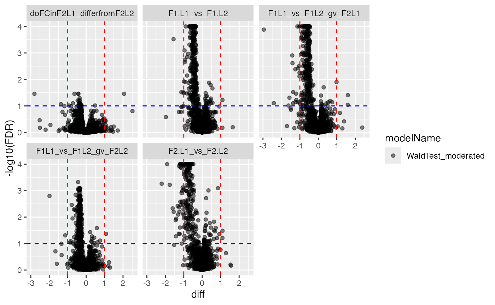
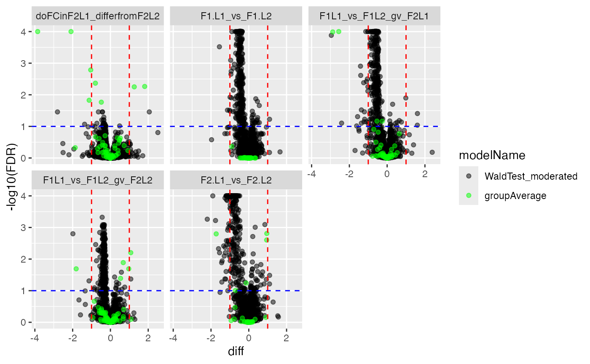

Modelling with Interactions
Witold E. Wolski
2026-02-22
Source:vignettes/Benchmark_Model_IonStar_With2Factors.Rmd
Benchmark_Model_IonStar_With2Factors.RmdTODO(wew,jg): Can you please add a one-liner of the purpose of the vignette?
a <- c(a = 3, b = 4.5, c = 6, d = 7.5, e = 9)
F1 <- list(L1 = 3, L2 = 4.5)
F2 <- list(L1 = 0, L2 = 3)
a <- F1$L1 + F2$L1 # 3
b <- F1$L2 + F2$L1 # 4.5
c <- F1$L1 + F2$L2 # 6
d <- F1$L2 + F2$L2 # 7.5
#(F1L1 - F1L2) gv F2L1 = log2(3/4.5) = -0.585
#(F1L1 - F1L2) gv F2L2 = log2(6/7.5) = -0.321
c(a, b, c, d)## [1] 3.0 4.5 6.0 7.5First, we load the data and do the configuration.
datadir <- file.path(find.package("prolfquadata") , "quantdata")
inputAnnotation <- file.path(datadir, "annotation_Ionstar2018_PXD003881.xlsx")
annotation <- readxl::read_xlsx(inputAnnotation)
annotation <- annotation |> dplyr::filter(sample != "e")
annotation <- annotation |>
dplyr::mutate(F1 = dplyr::case_when(sample %in% c("a","c") ~ "L1", TRUE ~ "L2"),
F2 = dplyr::case_when(sample %in% c("a","b") ~ "L1", TRUE ~ "L2")) |>
dplyr::arrange(sample)
datadir <- file.path(find.package("prolfquadata") , "quantdata")
inputMQfile <- file.path(datadir,
"MAXQuant_IonStar2018_PXD003881.zip")
data <- prolfquapp::tidyMQ_Peptides(inputMQfile)
length(unique(data$proteins))## [1] 5295Read the sample annotation. The sample annotation must contain the
raw.file name and the explanatory variables of your
experiment, e.g. treatment, time point, genetic background, or other
factors which you would like to check for confounding.
Then you need to tell prolfqua which columns in
the data frame contain what information. You do it using the
AnalysisTableAnnotation class.
The AnalysisTableAnnotation has the following fields
that need to be populated: - fileName - hierarchy - factors -
workingIntensity , and we will discuss it in more detail below.
The fileName is the column with the raw file names,
however for labelled TMT experiments, it can be used to hold the name of
the TMT channel.
The hierarchy field describes the structure of the MS
data e.g, - protein - peptides - modified peptides - precursor In case
of the MaxQuant peptide.txt file we have data on protein
level.
In addition, we need to describe the factors of the
analysis, i.e., the column containing the explanatory variables.
config <- prolfqua::create_config_MQ_peptide()
res <- dplyr::inner_join(
data,
annotation,
by = "raw.file"
)
config$table$factors[["F1."]] = "F1"
config$table$factors[["F2."]] = "F2"
config$table$factorDepth <- 2
data <- prolfqua::setup_analysis(res, config)
lfqdata <- prolfqua::LFQData$new(data, config)Filter the data for small intensities (maxquant reports missing values as 0) and for two peptides per protein.
lfqdata$data <- lfqdata$data |> dplyr::filter(!grepl("^REV__|^CON__", protein_Id))
lfqdata$filter_proteins_by_peptide_count()
lfqdata$remove_small_intensities()
lfqdata$hierarchy_counts()## # A tibble: 1 × 3
## isotope protein_Id peptide_Id
## <chr> <int> <int>
## 1 light 4176 29762
tr <- lfqdata$get_Transformer()
subset_h <- lfqdata$get_copy()
subset_h$data <- subset_h$data |> dplyr::filter(grepl("HUMAN", protein_Id))
subset_h <- subset_h$get_Transformer()$log2()$lfq
lfqdataNormalized <- tr$log2()$robscale_subset(lfqsubset = subset_h)$lfq
lfqAggMedpol <- lfqdataNormalized$get_Aggregator()
lfqAggMedpol$medpolish()
lfqTrans <- lfqAggMedpol$lfq_aggModel Fitting
defines the contrasts
lfqTrans$rename_response("abundance")
formula_2_Factors <- prolfqua::strategy_lm("abundance ~ F1. * F2. ")
# specify model definition
modelName <- "Model"
Contrasts <- c("F1.L1_vs_F1.L2" = "F1.L1 - F1.L2",
"F2.L1_vs_F2.L2" = "F2.L1 - F2.L2",
"F1L1_vs_F1L2_gv_F2L1" = "`F1.L1:F2.L1` - `F1.L2:F2.L1`",
"F1L1_vs_F1L2_gv_F2L2" = "`F1.L1:F2.L2` - `F1.L2:F2.L2`",
"doFCinF2L1_differfromF2L2" = "`F1L1_vs_F1L2_gv_F2L1` - `F1L1_vs_F1L2_gv_F2L2`"
)The following line fits the model.
mod <- prolfqua::build_model(lfqTrans, formula_2_Factors)
mod$anova_histogram(what = "FDR")## $plotp-value distributions for ANOVA analysis.
##
## $name
## [1] "Anova_p.values_Model.pdf"ANOVA
Examine proteins with a significant interaction between the two factors treatment and batch.
ANOVA <- mod$get_anova()
ANOVA |>
dplyr::filter(factor == "F1.:F2.") |>
dplyr::arrange(FDR) |>
head(5)## # A tibble: 5 × 10
## protein_Id factor Df Sum.Sq Mean.Sq F.value p.value isSingular nrcoef
## <chr> <chr> <int> <dbl> <dbl> <dbl> <dbl> <lgl> <int>
## 1 sp|P0A7J3|RL10_… F1.:F… 1 0.174 0.174 51.2 1.15e-5 FALSE 4
## 2 sp|P0A905|SLYB_… F1.:F… 1 0.122 0.122 51.5 1.12e-5 FALSE 4
## 3 sp|P0A953|FABB_… F1.:F… 1 0.404 0.404 49.5 1.37e-5 FALSE 4
## 4 sp|P13029|KATG_… F1.:F… 1 0.0599 0.0599 50.7 1.21e-5 FALSE 4
## 5 sp|P0A763|NDK_E… F1.:F… 1 0.185 0.185 45.8 2.00e-5 FALSE 4
## # ℹ 1 more variable: FDR <dbl>
ANOVA$factor |> unique()## [1] "F1." "F2." "F1.:F2."
protIntSig <- ANOVA |> dplyr::filter(factor == "F1.") |>
dplyr::filter(FDR < 0.1)
protInt <- lfqTrans$get_copy()
protInt$data <- protInt$data[protInt$data$protein_Id %in%
protIntSig$protein_Id, ]
protInt$hierarchy_counts()## # A tibble: 1 × 2
## isotope protein_Id
## <chr> <int>
## 1 light 415## [1] 0.9511936
#ggpubr::ggarrange(plotlist = protInt$get_Plotter()$boxplots()$boxplot)Compute contrasts
contr <- prolfqua::ContrastsModerated$new(prolfqua::Contrasts$new(mod, Contrasts))
#contr$get_contrasts_sides()
contrdf <- contr$get_contrasts()The code snippets graph the volcano and ma plot.
plotter <- contr$get_Plotter()
plotter$volcano()## $FDR
plotter$ma_plot()
Annalyse contrasts with missing data imputation
lfqTrans$config$table$factorDepth <- 2
# ContrastsMissing$debug("get_contrasts")
contrSimple <- prolfqua::ContrastsMissing$new(lfqdata = lfqTrans,
Contrasts)
contrdfSimple <- contrSimple$get_contrasts()
# na.omit(contrdfSimple)
pl <- contrSimple$get_Plotter()
pl$histogram_diff()
pl$volcano()## $p.value##
## $FDRMerge nonimputed and imputed data.
dim(contr$get_contrasts())## [1] 20466 13
dim(contrSimple$get_contrasts())## [1] 20880 20
mergedContrasts <- prolfqua::merge_contrasts_results(prefer = contr, add = contrSimple)$merged
cM <- mergedContrasts$get_Plotter()
plot <- cM$volcano()
plot$FDR
The prolfqua package is described in [@Wolski2022.06.07.494524].
Session Info
## R version 4.5.2 (2025-10-31)
## Platform: x86_64-pc-linux-gnu
## Running under: Ubuntu 24.04.3 LTS
##
## Matrix products: default
## BLAS: /usr/lib/x86_64-linux-gnu/openblas-pthread/libblas.so.3
## LAPACK: /usr/lib/x86_64-linux-gnu/openblas-pthread/libopenblasp-r0.3.26.so; LAPACK version 3.12.0
##
## locale:
## [1] LC_CTYPE=C.UTF-8 LC_NUMERIC=C LC_TIME=C.UTF-8
## [4] LC_COLLATE=C.UTF-8 LC_MONETARY=C.UTF-8 LC_MESSAGES=C.UTF-8
## [7] LC_PAPER=C.UTF-8 LC_NAME=C LC_ADDRESS=C
## [10] LC_TELEPHONE=C LC_MEASUREMENT=C.UTF-8 LC_IDENTIFICATION=C
##
## time zone: UTC
## tzcode source: system (glibc)
##
## attached base packages:
## [1] stats graphics grDevices utils datasets methods base
##
## loaded via a namespace (and not attached):
## [1] gridExtra_2.3 writexl_1.5.4
## [3] readxl_1.4.5 rlang_1.1.7
## [5] magrittr_2.0.4 otel_0.2.0
## [7] matrixStats_1.5.0 compiler_4.5.2
## [9] systemfonts_1.3.1 vctrs_0.7.1
## [11] stringr_1.6.0 pkgconfig_2.0.3
## [13] crayon_1.5.3 fastmap_1.2.0
## [15] XVector_0.50.0 labeling_0.4.3
## [17] pander_0.6.6 utf8_1.2.6
## [19] rmarkdown_2.30 tzdb_0.5.0
## [21] preprocessCore_1.72.0 ragg_1.5.0
## [23] UpSetR_1.4.0 purrr_1.2.1
## [25] bit_4.6.0 xfun_0.56
## [27] cachem_1.1.0 jsonlite_2.0.0
## [29] progress_1.2.3 DelayedArray_0.36.0
## [31] prettyunits_1.2.0 R6_2.6.1
## [33] bslib_0.10.0 stringi_1.8.7
## [35] RColorBrewer_1.1-3 limma_3.66.0
## [37] GenomicRanges_1.62.1 jquerylib_0.1.4
## [39] cellranger_1.1.0 Rcpp_1.1.1
## [41] Seqinfo_1.0.0 bookdown_0.46
## [43] assertthat_0.2.1 SummarizedExperiment_1.40.0
## [45] knitr_1.51 lobstr_1.2.0
## [47] readr_2.2.0 IRanges_2.44.0
## [49] Matrix_1.7-4 tidyselect_1.2.1
## [51] abind_1.4-8 yaml_2.3.12
## [53] affy_1.88.0 lattice_0.22-7
## [55] tibble_3.3.1 plyr_1.8.9
## [57] Biobase_2.70.0 withr_3.0.2
## [59] S7_0.2.1 prolfqua_1.4.0
## [61] evaluate_1.0.5 desc_1.4.3
## [63] getopt_1.20.4 pillar_1.11.1
## [65] affyio_1.80.0 BiocManager_1.30.27
## [67] MatrixGenerics_1.22.0 stats4_4.5.2
## [69] plotly_4.12.0 generics_0.1.4
## [71] dtplyr_1.3.3 S4Vectors_0.48.0
## [73] hms_1.1.4 ggplot2_4.0.2
## [75] scales_1.4.0 glue_1.8.0
## [77] pheatmap_1.0.13 lazyeval_0.2.2
## [79] tools_4.5.2 data.table_1.18.2.1
## [81] vsn_3.78.1 forcats_1.0.1
## [83] fs_1.6.6 grid_4.5.2
## [85] optparse_1.7.5 tidyr_1.3.2
## [87] crosstalk_1.2.2 cli_3.6.5
## [89] prolfquapp_2.0.10 textshaping_1.0.4
## [91] S4Arrays_1.10.1 viridisLite_0.4.3
## [93] arrow_23.0.0.1 dplyr_1.2.0
## [95] gtable_0.3.6 sass_0.4.10
## [97] digest_0.6.39 BiocGenerics_0.56.0
## [99] SparseArray_1.10.8 ggrepel_0.9.6
## [101] htmlwidgets_1.6.4 farver_2.1.2
## [103] htmltools_0.5.9 pkgdown_2.2.0
## [105] lifecycle_1.0.5 httr_1.4.8
## [107] statmod_1.5.1 bit64_4.6.0-1
## [109] MASS_7.3-65